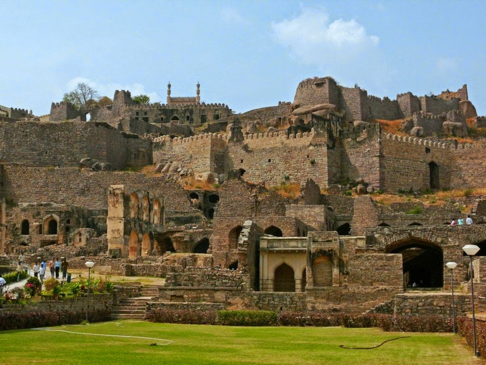
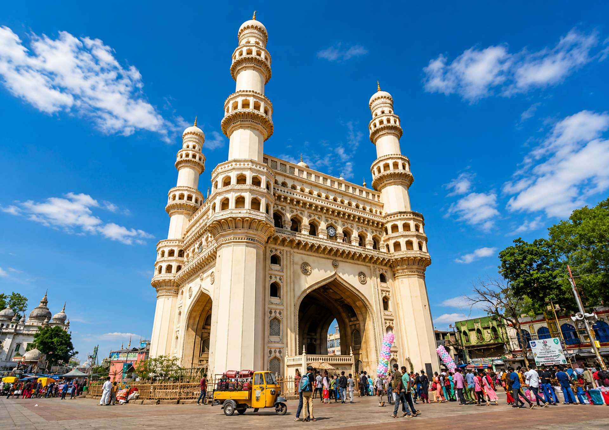
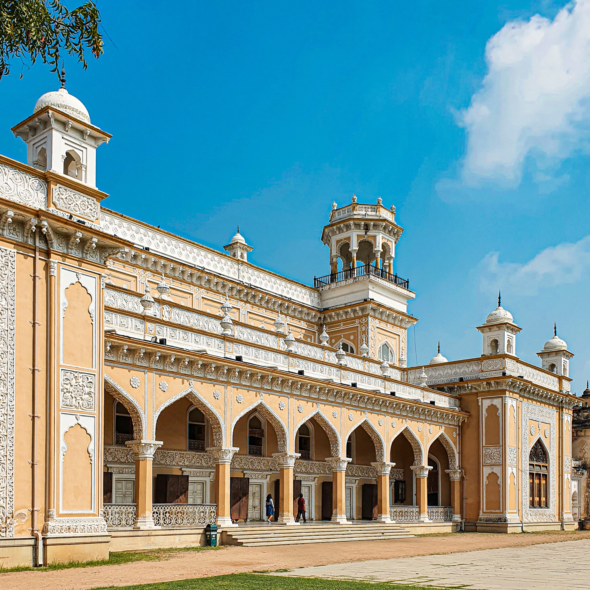

Golconda Fort is a monumental medieval fortress in Hyderabad, famed for its brilliant acoustic engineering, royal palaces, and impregnable granite bastions. Once the thriving seat of the Qutb Shahi dynasty, it gained worldwide renown as the historic trading hub for legendary diamonds like the Koh-i-Noor and Hope Diamond.

The Charminar is a magnificent 16th-century monument and mosque that serves as the iconic symbol of Hyderabad, India. Built in 1591 by Sultan Muhammad Quli Qutb Shah to mark the end of a deadly plague, the grand Indo-Islamic structure features four soaring 56-meter minarets anchoring its corners. Today, it stands as a bustling cultural centerpiece, rising above historic markets famous for pearls and traditional bangles.

Chowmahalla Palace is a magnificent 18th-century palace in Hyderabad that served as the official seat of the Asaf Jahi dynasty. Renowned for its elegant blend of Persian, Indo-Saracenic, and European neoclassical architecture, it features lavish courtyards, vintage royal carriages, and the opulent Khilwat Mubarak durbar hall lined with sparkling Belgian crystal chandeliers.
"I've lived in Hyderabad for most of my life so I can show you the best places and the best food!"
Musab Sagri